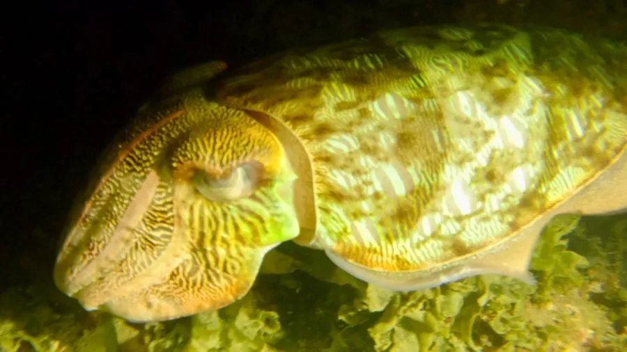

软体动物 · 动物界
拟目乌贼 Sepia lycidas

体型较大的乌贼，体表有类似眼睛的圆斑，游泳时腕足并拢，是中国南海和东海南部常见的经济头足类。
- 分类
- 门软体动物门纲头足纲目乌贼目科乌贼科属乌贼属
- 栖息环境
- 热带至亚热带近岸沙泥底质海域，水深数十米至一百多米
- 地理分布
- 印度洋至西太平洋，包括中国南海、东海南部、日本南部和东南亚
- 保护级别
- 尚无保护级别；为南海重要经济种，受捕捞强度影响
物种志
拟目乌贼体型较大，外套膜长可达三十厘米，连腕全长可超过四十厘米，体重可达数千克。身体呈椭圆形，背面的浅褐色底上分布着许多圆形或椭圆形的斑块，斑块中央颜色较深，边缘较浅，看上去像一只只眼睛，拟目乌贼之名由此而来。鳍窄而长，沿身体两侧延伸。体内有石灰质的乌贼骨，是退化的内壳。它有十条腕，其中两条为细长的触腕，捕食时迅速弹出抓住虾蟹。
它分布于印度洋至西太平洋的热带和亚热带海域，包括中国南海、东海南部、日本南部和东南亚，栖息在水深数十米至一百多米的沙泥底质近岸海域。它是凶猛的肉食者，捕食虾类、蟹类和小鱼，夜间活动较频繁，有明显的垂直移动。春夏季游向近岸产卵，把卵粒粘成葡萄状的卵群附着在海底杂物上。拟目乌贼是中国南海重要的经济头足类，以鲜销和加工为主，目前尚无保护级别，资源量受捕捞强度影响明显。
形态与习性
- 食性捕食虾类、蟹类和小鱼
- 体长外套膜可达三十厘米，连腕全长超过四十厘米
- 花纹背面有类似眼睛的圆形斑块
- 栖息深度水深数十米至一百多米的沙泥底
- 繁殖春夏游向近岸，卵粘成葡萄状卵群
- 经济价值中国南海重要经济头足类，鲜销或加工
趣味知识
- 拟目乌贼背上的圆斑中央深、边缘浅，看上去像一只只盯着人的眼睛。
- 它和虎斑乌贼是近亲，但花纹是圆眼斑而不是虎纹。
- 它的卵群像一串串葡萄挂在海底杂物上，孵化后幼体会游向浅水。